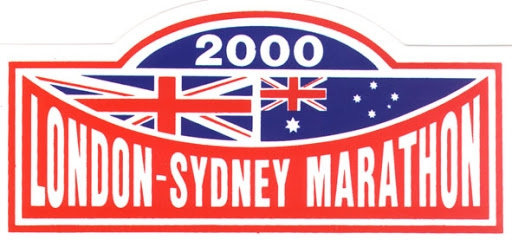
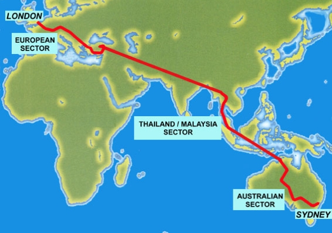
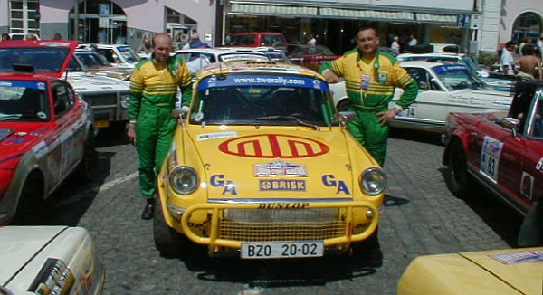
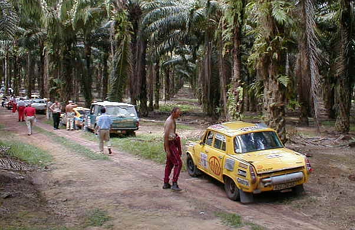
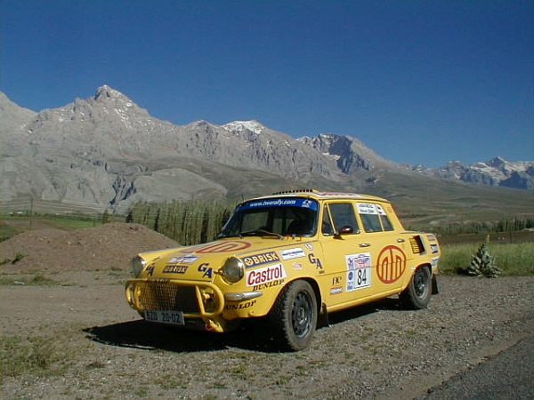
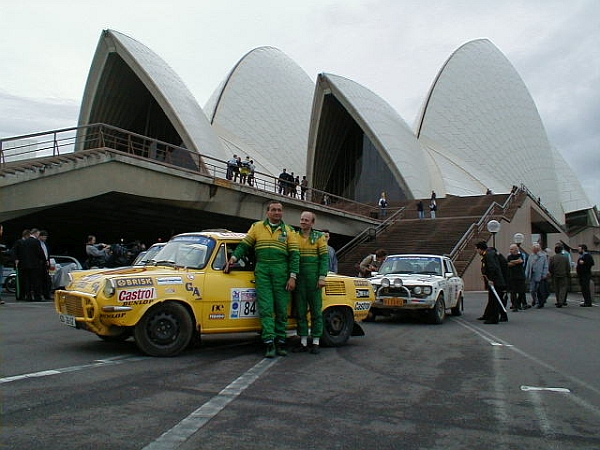

london sydney 2000 
 
Maraton Londýn Sydney 2000 byl velmi nejednoduchá
záležitost - a to jak v období připrav, tak v průběhu
samotné akce, což potvrdí libovolný jeho
účastník z kteréhokoli roku.Závodníci v roce 2000 projeli z Londýna přes Francii Evropou - mimo jiné i přes Českou republiku, kde se jim dostalo vřelého přivítání na všech zastávkách - až do Turecka. Tato část zabrala celkem dva týdny. Jezdci měli všechny svoje věci, včetně náhradních díů na auta, v bednách, které vozily kamiony. Nutné opravy mohly tedy probíhat pouze v polních podmínkách a pouze pokud se jezdcům podařilo shledat s kamiony.
 
Druhá část maratonu startovala z Thajska - a
kompletní startovní pole i s kamiony s díly se tam
dostalo největším letadlem světa, nákladním
Antonovem. Jezdci museli posbírat všechny svoje
síly, aby dokázali projet Thajskem a Malajsií, kde
panují u nás nevídané klimatické
tropické podmínky a samozřejmě styl života je
úplně jiný.
Do cíle v Sydney nakonec z původní stovky posádek
dorazilo jen necelých osmdesát. Naše trojice Josef Michl, Marek Šimík a Škoda 1000 MB
se v cíli náročného závodu naonec
umístila na třetím místě ve své kategorii.